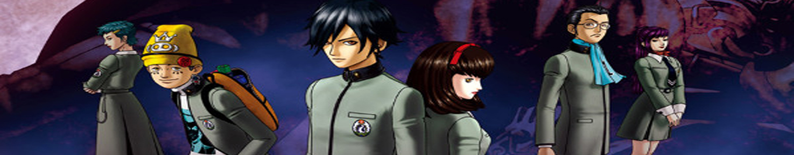
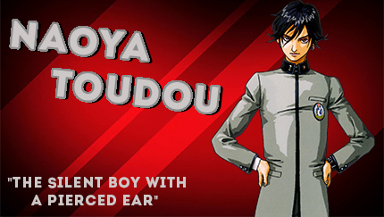
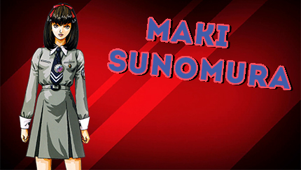
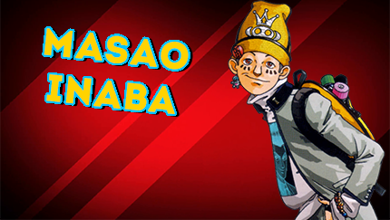
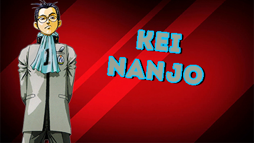
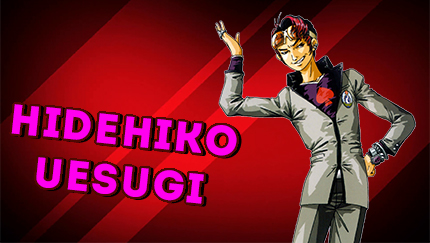
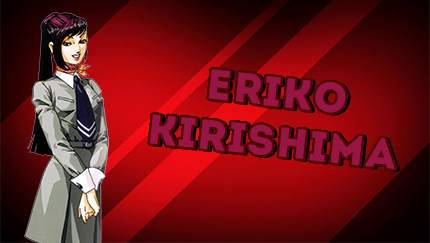
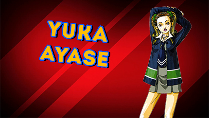
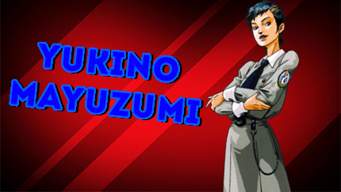

Revelations: Persona \\ Shin Megami Tensei: Persona
What's The Difference?
Comparison of Mark between Revelations: Persona
and Shin Megami Tensei: Persona
Revelations: Persona was heavily changed when it was localized for a North American release. All characters were renamed, and several of them (most notably Mark) had their appearance altered as well. Nearly all references to Japan or Japanese culture were cut, with the unusual exception being the shoe lockers and Shinto Shrines in the game. Many of the Personas were renamed rather than translated, and the town's name was changed to "Lunarvale". Yen was changed to dollars, and the overall difficulty of the game was reduced by lowering the enemy encounter rates and increasing the experience gained. However, while experience gain was increased to an amount proportional to the decreased random battle rate, money drops were left the same, resulting in a potential shortage of cash.
In addition to these changes, the Snow Queen Quest was removed by only allowing the player to commit to the SEBEC chapter. The data is still present in the game disk and it's possible to forcibly activate the quest by making use of cheating codes, but the Quest is untranslated and the game's engine cannot render Japanese characters which show as strange symbols.
All of these changes were undone in the PlayStation Portable port: Shin Megami Tensei: Persona. On top of this, other things were changed, such as new background tracks, new voices for the characters, all new animated cutscenes, etc.
Plot
The main characters during their "persona" game.
Set in 1996, Megami Ibunroku Persona centers around the protagonist and his classmates at St. Hermelin High School in Mikage-cho (Lunarvale in Revelations: Persona). Hidehiko Uesugi talks all of his friends into playing a game called"Persona", which is played much like the ritual game "Bloody Mary". While playing, the students lose consciousness and meet Philemon, who gives them the ability to summon reflections of their personalities, which are known as Personas.
A short time later, the protagonist and several of his friends go to visit Maki Sonomura, who is ill and bed-ridden. During their visit, they discover that the town is changing and demons are roaming the streets. The party is told by Maki's mother, an engineer working for SEBEC, that the culprit behind the incident is Takahisa Kandori, president of the company.
After taking Maki's mother to the school (the only place in town safe from demons), the protagonist's actions decide the course of the story. If the protagonist opts for going after Kandori, it'll start the SEBEC Chapter which is the main storyline of the game. Alternatively, the protagonist may opt for investigating a series of incidents that occurred in the school eight years ago and start the Snow Queen Quest, an alternate storyline unrelated to the SEBEC incident.
Characters
The Protagonist \\ Naoya Toudou
"The nameless, silent boy with the pierced ear."
For the most part, the protagonist is silent, and his personality is controlled by the player, setting up a pattern the protagonists of later games would follow. However, the decisions that lead to the game's true ending and the gaining of the Ultimate Personas paint the protagonist as a natural leader; a compassionate, perceptive, yet blunt person who is motivated to seek his personal reason for life and discourages hiding from the truth. In the manga, Naoya also inherited this same trait, though since he is mostly quiet and going along with everyone else, the rest of the party are surprised when he shows his hot-headed side while leading them.
Naoya used to have an older twin brother named Kazuya. One day, when he was a child, Naoya had a cold and was being taken care of by Kazuya and their mother. Kazuya and their mother had to go shopping, but Kazuya went out of his way to buy a manga to cheer up Naoya. On the way home, however, Kazuya was hit by a truck and passed away. Kazuya's death greatly shook their mother to the point that she initially mistook Naoya as Kazuya when the younger twin saw his older brother's body. Naoya quickly denied that he was Kazuya, but this made his mother cry.
During Kazuya's funeral, one of his relatives gave her condolences by telling how kind Kazuya was for trying to buy a manga to cheer him up that led to his death. This made Naoya felt responsible for Kazuya's death. To ease his mother who was still unable to accept Kazuya's death, Naoya started to act like Kazuya to the point he almost believed himself to be Kazuya. However, once his father came back home from his job overseas and argued with his mother, his mother accepted Kazuya's death and Naoya pierced his ear as a proof that he is not Kazuya and made himself forget the day Kazuya died out of guilt.
The resulting guilt caused Naoya's shadow to manifest in Maki's ideal world and takes the identity of Kazuya with the same appearance as Naoya, but his ear is not pierced.
-Voice of Grant George (PSP)
Maki Sunomura
Normal Maki is a serene, quiet girl who takes simple pleasures such as painting or just being with her friends, and in her youth her poor health made her profoundly unhappy, as it denied her most of these simple delights; as a result of Takahisa Kandori's experimentation, her whole self was splintered into several personality fragments. As a result of the events of Megami Ibunroku Persona, her condition was stabilized and she was reunited to completeness, though she was left with the memories of the horrors she had unwittingly caused.
This became a major motivation at the time of Persona 2, leading her to elect the career of a therapist so she could help others to make up for the destruction she had once wrought.
Maki has dark brown hair tied in a red ribbon atop her hair and a beauty mark near her mouth. In school, she wears the St. Hermelin High School uniform and her mirror compact.
In the Persona 2 duology, she has a pixie shaped hair cut, a white coat with gray intersecting lines over a gray shirt and skirt, black leggings and white boots.
-Voice of Michelle Raymond (Revelations) | Melissa Fahn (PSP)
Masao Inaba
Masao is a troublemaker and class clown, but also a friendly student who doesn't get along with Kei. He seems to have a crush on Maki Sonomura and frequently visits her in the hospital while being the most protective of her. Being a troublemaker by choice, he takes pride in his graffiti artwork that can be found throughout the city. His hobby puts him at odds with the local police, but he knows they are only looking out for him as he is the only one emotionally phased by the police becoming zombies.
Masao has gray sideburns, orange eyes, and has six black marks on both cheeks. At school he wears the school uniform of St. Hermelin High with white long sleeves, a turtleneck shirt, wears a yellow beanie, colorful beaded bracelets and carries a yellow backpack.
In Revelations: Persona, Masao was changed to an African American to make the cast more ethnically diverse.
-Voice of Sam Riegel (PSP)
Kei Nanjo
Kei was forced to join in on the demon summoning game "Persona," which was started by a couple of his classmates. Kei chooses to just watch, as he doesn't really care about the result and feels that everyone was just feeding Masao and Hidehiko's stupid squabbles.
Kei is the most logical member of the group, this being both a good and a bad thing. At two points in the game, Kei suggests to let two innocent people die in order to save everyone else, the professor in charge of managing the DEVA System, who trapped himself in the machine along with Kandori to stop him from destroying reality and the true Maki Sonomura found after the Ideal Maki escapes from the party. However, these extreme choices are usually seen negatively by the rest of the party, with the latter leading to Masao punching Kei down.
Even with his seemingly collected and oftentimes stiff personality, Kei has a solitary weakness, and it is none other than the theme song often played at the chain of pharmacies owned by the Tadashi Family. This first manifested back in high school during the investigation on SEBEC, and haunts him up to adulthood. Kei feels that the silly lyrics hypnotize him, which invariably results in a total loss of composure.
Kei usually uses the term "shounen" (young lad) despite oftentimes being the same age or younger than the person he is talking to. His upbringing could be a factor that brought about this unusual habit.
-Voice of Troy Baker (PSP)
Hidehiko Uesugi
He is the resident class clown of St. Hermelin, relying on stupid puns and old man jokes to get attention.
In Persona 2: Innocent Sin, Hidehiko is now a popular variety-talk show host, and his ego has swelled to the point of no return, especially getting nationwide attention for the rumor that he is the boy-toy of actress Junko Kurosu which turns out to be false, since he actually despises the actress for having an ego as big as he does. Even so, he still addresses the latter as "Junko-chan."
He is the one who introduces the demon summoning game "Persona" to his classmates. Hidehiko pesters his classmates to try out the game "Persona" in order to impress them, but Masao Inaba doesn't believe that it will actually work. They both hold a bet, with the loser having to treat everyone who was dragged into it at the Peace Diner. Masao thinks that he won at first, because nothing happened after the ritual. Hidehiko complains, saying that Masao didn't try hard enough when it was his turn to perform. But then a crying young girl appears, and they are all hit by flashes of lightning that send them to the border of consciousness and unconsciousness.
-Voice of Keith Silverstein (PSP)
Eriko Kirishima
Aside from her outwardly feminine hobbies, Eriko was also interested in the occult. Because of this, she was excited to once again do the demon-summoning game "Persona" that her classmates were pulled into because of Masao Inaba and Hidehiko Uesugi's silly bet. Eriko played along despite having done the game prior to see how her classmates would react to the result. She was nonetheless shocked to see her classmates forcibly sent to the realm bordering consciousness and unconsciousness after being hit by lightning.
She expresses overly-ecstatic enthusiasm over the fact that her Persona is the "Goddess of Victory." Sometimes her love for the supernatural and experiencing new things related to it clouds her judgment of what is dangerous or not. After the initial surprise, she's not startled by meeting a ghost ("We only heard sounds the last time, how intriguing"), the fact that lightning is raining down indoors ("Fantastic! This is becoming more and more interesting") or (in the manga) being turned into stone ("It's over already? What a shame, I wanted to experience the feel of being a statue for a while longer").
-Voice of Michelle Raymond (Revelations) | Stephanie Sheh (PSP) | Amanda Winn Lee (Persona 2: Eternal Punishment)
Yuka Ayase
A somewhat shallow girl who doesn't think about the future and prefers to live in the moment. She is extremely blunt about her feelings, especially when something displeases her. Yuka is indifferent to other people's suffering, but will lash out and complain childishly when something affects her. She is a bad student, but despite her bad grades, Yuka has a natural ability for observation. She also makes use of kogalgo (kogal slang), which was translated to valley girl slang in the first localized version.
Having played the Persona game with Hidehiko prior to the beginning of the game, Yuka isn't hit by lightning after Mai's appearance and stays at the school. She can be later found with Yuko Himeno trying to block the hole in the wall to the gym in order to prevent that demons enter the school.
In the SEBEC route, Yuka is an optional party member. Sometime after the protagonist enters the Police Station to rescue Mark, the school disappears due to the influence of the DEVA System. Yuka managed to escape from the school before it disappears and hid in the Abandoned Factory, where she is found by the party. If the player doesn't have a fifth party member and didn't follow the steps to recruit Reiji, Yuka will forcibly join the party. After finding the secret entrance in the factory, the party runs into two Secret Polices, who try to attack Yuka with guns, thus awakening her Persona. If she isn't recruited, Yuka is the only playable character whose Persona awakening is never shown.
-Voice of Michelle Raymond (Revelations) | Sandy Fox (PSP)
Reiji Kido

Reiji Kido is an antisocial transfer student of St. Hermelin High School who rarely shows up for class. It is later revealed if he is picked as a party member that he is the son of Kandori's father and his mistress. He blames his half-brother Takahisa Kandori for how his life has turned out and believes that the latter must die. To this end, Reiji skulks around the SEBEC facility, waiting for a chance to confront Kandori. Despite his brusque tendencies, many girls of St. Hermelin take quite a shine to him. When not wandering the streets, Reiji often practices magic tricks with playing cards in his spare time.
In Persona 2 whether or not he has personally exacted revenge on Kandori is unclear, but he has since changed his appearance from a misfit to an ordinary salesman, growing his hair out to conceal the scar in his forehead. Reiji has turned to door-to-door knife-selling in order to support himself and an older live-in partner whom he got pregnant. Unfortunately, his Persona's intimidating aura often scares customers away despite his now-respectable appearance; in the same vein, the same tendencies that marked him as a rebel in his teenage years make him an awkward and socially inept adult. From time to time, he would begrudgingly seek the advice of fellow St. Hermelin alumnus Kenta "Toro" Yokouchi, whose own Persona has made him very successful.
-Voice of Christopher Sabat (PSP)
Yukino Mayuzumi
She was an ex-yankī who was reformed thanks to the efforts of her teacher Saeko Takami. Though she hasn't shed her yankī looks just yet, Yukino is well-recognized and trusted by the student body, acting as a mother figure of sorts to her friends.
In Persona 2: Innocent Sin she is still dearly holding the memory of her former teacher Ms. Saeko, who rescued her from a life of crime, and due to that Yukino is compelled to do the same for another student who seems like she is about to embark down the same path, Anna Yoshizaka. She harbors a deep-seated crush for Fujii, and tries to disguise her tomboy traits in his presence.
In the beginning, Yukino was one of the students present while her classmates played the Persona game, and thus ends up unconscious at the conclusion of the game. As a result she follows the party to the Mikage Hospital for an examination. While there, demons attack, and she fights her way out of the hospital with her classmates. Upon reaching the school, Yukino leaves the party, and does not return in the SEBEC quest.
However, in the Snow Queen Quest, she is a mandatory character. Yukino is there when Saeko Takami is possessed by the Snow Queen, and feels it is her duty to rescue her teacher.
-Voice of Michelle Raymond (Revelations) | Kristen Potter (PSP)